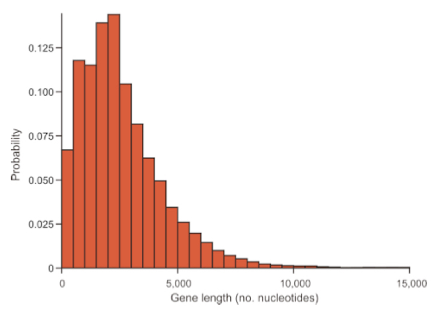

Chapter 8 Introduction to Probability and Probability Distributions
8.1 Background
A practical knowledge of statistical inference requires a basic understanding of probability. For example we often want to understand how likely a particular observation or set of observations is (e.g. from a sample of a population), given some expectation. That expectation may be based on a theoretical probability distribution we can use to model variation in nature. In this chapter we will introduce some core concepts of probability and how those pertain to understanding observed parameters, or features, and variation within systems.
8.2 What is probability?
- Frequency interpretation
“Probabilities are understood as mathematically convenient approximations to long run relative frequencies.”
- Subjective interpretation
“A probability statement expresses the opinion of some individual regarding how certain an event is to occur.”
8.3 Random variables & probability
Probability is the expression of belief in some future outcome based on information about a system. In statistics, we often think about variables we want to understand or estimate in the real world. In terms of probability, a random variable can take on different values with different probabilities. The sample space of a random variable is the universe of all possible values for that variable. It may be helpful to think of the sample space in the form of a plotted function, where possible values of the random variable make up the x-axis, and the probability of “drawing” a particular value at random makes up the y-axis.
The sample space can be represented by a probability distribution when our random variable is discrete. By discrete we mean that the variable can take on a limited (finite) number of values. Meristic traits like the number of bristles on the abdomen of an insect or the number of action potentials a neuron experiences in a single window of time can only have positive integer values. Continuous random variables like human height, on the other hand, can in theory take on an infinite number of values, but are in practice limited by our measurement precision. For continuous variables, the sample space is represented by what we call a probability density function (PDF). Probabilities over a sample space always sum to 1.0, and we use tools from algebra (for probability distributions) and calculus (for probability density functions) to make use of their properties in statistical modeling and inference.
Distributions of random variables can be expressed as functions that have moments. These moments are metrics of a function’s shape, and these can be estimated. For example the 1st, 2nd, 3rd and 4th moments of a distribution correspond to the mean, variance, skewness, and kurtosis, respectrively. For now let’s just consider the first two.
- The expectation or mean of a random variable X is:
\[E[X] = \sum_{\text{all x}}^{}xP(X=x) = \mu\]
- Often we want to know how dispersed the random variable is around its mean
- One measure of dispersion is the variance:
\[Var(X) = E[X^2] = \sigma^2\]
There are many families or forms of probability distributions and PDFs, and which ones we apply in statistics depend on the dynamical system we are trying to represent. We will return to the most commonly used ones below. Probability distributions and PDFs are mathematically defined by features we call parameters, which are defined by the moments pointed out above. The parameters of the functions themselves are used to understand properties of the systems we use the functions to model. For example the normal distribution (also called the Gaussian distribution), which is probably the most famous PDF in statistics, is characterized by 2 parameters: \(mu\) (the mean) and \(sigma^{2}\) (the variance). In practical terms, those parameters dictate the central peak or “mode” and the spread (width), respectively. These parameters are clearly important for us in thinking about the systems we study. For example in biology we often think about random variables as values expressed by individual living things. We may consider, in theory, all possible indviduals under a given set of circumstances, and one or more random variables associated with those individuals. In statistics we call this theoretical notion of all individuals a population. If it makes sense to model a random variable in that population with a particular probability distribution or PDF, it opens the door to estimating the aforementioned parameters, but in the population. Mean height definitely tells us something about the most common values in a population of humans, as does how variable height is among individuals. So you can see how probability distributions and PDFs, when applied under the appropriate assumptions, help us understand, quantify, and compare random variables in populations.
8.4 Probability and the Bernoulli distribution
To think about probability and probability distributions, let’s start with an example (the Bernoulli distribution. It describes the expected outcome of a single event with probability p. A good example of this scenario is the flipping of a fair coin once.
\[Pr(X=\text{Head}) = \frac{1}{2} = 0.5 = p \]
\[Pr(X=\text{Tails}) = \frac{1}{2} = 0.5 = 1 - p \]
If the coin isn’t fair then \(p \neq 0.5\)
However, the probabilities still sum to 1
\[ p + (1-p) = 1 \]
The same extensions can be made for other binary possibilities, like success or failure, “yes” or “no” answers, choosing an allele at a biallelic locus from a population, etc.
8.5 Probability rules
Let’s take a moment to cover some basic rules of probability that have to do with observance of multiple “events.”
- Let’s say we flip a coin twice
- Represent the first flip as ‘X’ and the second flip as ‘Y’
\[ Pr(\text{X=H and Y=H}) = p*p = p^2 \] \[ Pr(\text{X=H and Y=T}) = p*p = p^2 \] \[ Pr(\text{X=T and Y=H}) = p*p = p^2 \] \[ Pr(\text{X=T and Y=T}) = p*p = p^2 \]
- What about the probability that the
HandTcan occur in any order?
\[ \text{Pr(X=H and Y=T) or Pr(X=T and Y=H)} = \]
\[ (p*p) + (p*p) = 2p^{2} \]
- These are the ‘and’ and ‘or’ rules of probability
- ‘and’ means multiply the probabilities
- ‘or’ means sum the probabilities
- most probability distributions can be built up from these simple rules
8.6 Joint probability
\[Pr(X,Y) = Pr(X) * Pr(Y)\]
- Again (as above) this multiplication is true for two independent events
- However, for two non-independent events we also have to take into account their covariance
- To do this we need conditional probabilities
8.7 Conditional probability
- For two independent variables
\[Pr(Y|X) = Pr(Y)\text{ and }Pr(X|Y) = Pr(X)\]
- For two non-independent variables
\[Pr(Y|X) \neq Pr(Y)\text{ and }Pr(X|Y) \neq Pr(X)\]
Variables that are non-independent have a shared variance, which is also known as the covariance. You can think of this as two variables that consistently deviate from their respective meansCovariance standardized to a mean of zero and a unit standard deviation is correlation We will explore
8.8 A brief note on likelihood vs. probability
The probability of an event is the proportion of times that the event would occur if we repeated a random trial over and over again under the same conditions.
The likelihood is the probability of observing a particular set of data or outcome, given a particular parameter value.
L[parameter|data] = Pr[data|parameter]
Extending from this, the parameter value at which the likelihood is maximized is called the maximum likelihood estimate (MLE). You don’t need to worry too much about likelihood in this course, but realize that many of our formualae for estimating parameters from data actually produce maximum likelihood estimates. The formula we use to calculate a mean from a sample of observations, for example, produces the maximum likelihood estimate for the population mean from which that sample was taken. The likelihood function (for a single parameter) or likelihood surface (for multiple parameters) describes the relationship between different parameter values and their likelihood. We can’t always derive convenient equations to obtain maximum likelihood estimates, however, and in those cases we may have to rely on algorithmic searches of “parameter space” to find the MLE.
8.9 Probability distributions commonly used in biological statistics
(Many of these are thanks to Sally Otto at UBC)
8.9.1 Discrete Probability Distributions
8.9.1.1 Geometric Distribution
- If a single event has two possible outcomes the probability of having to observe
ktrials before the first “one” appears is given by the geometric distribution - The probability that the first “one” would appear on the first trial is
p, but the probability that the first “one” appears on the second trial is(1-p)*p - By generalizing this procedure, the probability that there will be
k-1failures before the first success is:
\[P(X=k)=(1-p)^{k-1}p\]
- mean = \(\frac{1}{p}\)
- variance = \(\frac{(1-p)}{p^2}\)
8.9.1.2 Geometric Distribution
- Example: If the probability of extinction of an endangered population is estimated to be 0.1 every year, what is the expected time until extinction?

8.9.1.3 Binomial Distribution
A binomial distribution results from the combination of several independent Bernoulli events
- Example
- Pretend that you flip 20 fair coins
- or collect alleles from a heterozygote
- Now repeat that process and record the number of heads
- We expect that most of the time we will get approximately 10 heads
- Sometimes we get many fewer heads or many more heads
- Pretend that you flip 20 fair coins
The distribution of probabilities for each combination of outcomes is
\[\large f(k) = {n \choose k} p^{k} (1-p)^{n-k}\]
nis the total number of trialskis the number of successespis the probability of successqis the probability of not success- For binomial as with the Bernoulli
p = 1-q

8.9.1.4 Negative Binomial Distribution
- Extension of the geometric distribution describing the waiting time until
r“ones” have appeared. - Generalizes the geometric distribution
- Probability of the \(r^{th}\) “one” appearing on the \(k^{th}\) trial:
\[P(X=k)=(\frac{k-1}{r-1})p^{r-1}(1-p)^{k-r}p\]
which simplifies to
\[P(X=k)=(\frac{k-1}{r-1})p^{r}(1-p)^{k-r}\]
- mean = \(\frac{r}{p}\)
variance = \(r(1-p)/p^2\)
- Example: If a predator must capture 10 prey before it can grow large enough to reproduce
- What would the mean age of onset of reproduction be if the probability of capturing a prey on any given day is 0.1?
Notice that the variance is quite high (~1000) and that the distribution looks quite skewed

8.9.1.5 Poisson Probability Distribution
Another common situation in biology is when each trial is discrete, but the number of observations of each outcome is observed/counted
- Some examples are
- counts of snails in several plots of land
- observations of the firing of a neuron in a unit of time
- count of genes in a genome binned to units of 500 AA
- Just like before you have ‘successes’, but
- now you count them for each replicate
- the replicates now are units of area or time
- the values can now range from 0 to a large number
- For example, you can examine 1000 genes
- count the number of base pairs in the coding region of each gene
- what is the probability of observing a gene with ‘r’ bp?
Pr(Y=r)is the probability that the number of occurrences of an eventyequals a countrin the total number of trials
\[Pr(Y=r) = \frac{e^{-\mu}\mu^r}{r!}\]
- Note that this is a single parameter function because \(\mu = \sigma^2\)
- The two together are often just represented by \(\lambda\)
\[Pr(y=r) = \frac{e^{-\lambda}\lambda^r}{r!}\]
- This means that for a variable that is truly Poisson distributed:
- the mean and variance should be equal to one another
- variables that are approximately Poisson distributed but have a larger variance than mean are often called ‘overdispersed’
- quite common in RNA-seq and microbiome data
8.9.1.5.1 Poisson Probability Distribution | gene length by bins of 500 nucleotides

8.9.1.5.2 Poisson Probability Distribution | increasing parameter values of \(\lambda\)

8.9.2 Continuous probability distributions
P(observation lies within dx of x) = f(x)dx
\[P(a\leq X \leq b) = \int_{a}^{b} f(x) dx\]
Remember that the indefinite integral sums to one
\[\int_{-\infty}^{\infty} f(x) dx = 1\]
E[X] may be found by integrating the product of x and the probability density function over all possible values of x:
\[E[X] = \int_{-\infty}^{\infty} xf(x) dx \]
\(Var(X) = E[X^2] - (E[X])^2\), where the expectation of \(X^2\) is
\[E[X^2] = \int_{-\infty}^{\infty} x^2f(x) dx \]
8.9.2.1 Uniform Distribution
\[E[X] = \int_{a}^{b} x\frac{1}{b-a} dx = \frac{(a+b)}{2} \]

8.9.2.2 Exponential Distribution
\[f(x)=\lambda e^{-\lambda x}\]
E[X]can be found be integrating \(xf(x)\) from 0 to infinity
- leading to the result that
- \(E[X] = \frac{1}{\lambda}\)
\(E[X^2] = \frac{1}{\lambda^2}\)
- For example, let equal the instantaneous death rate of an individual.
The lifespan of the individual would be described by an exponential distribution (assuming that does not change over time).

8.9.2.3 Gamma Distribution
- The gamma distribution generalizes the exponential distribution.
- It describes the waiting time until the \(r^{th}\) event for a process that occurs randomly over time at a rate \(\lambda\) :
\[f(x) = \frac{e^{-\lambda x}\lambda x^{r-1}}{(r-1)!}\lambda\]
\[ Mean = \frac{r}{\lambda} \] \[ Variance = \frac{r}{\lambda^2} \]
- Example: If, in a PCR reaction, DNA polymerase synthesizes new DNA strands at a rate of 1 per millisecond, how long until 1000 new DNA strands are produced?
- Assume that DNA synthesis does not deplete the pool of primers or nucleotides in the chamber, so that each event is independent of other events in the PCR chamber.
8.9.2.4 The Gaussian or Normal Distribution
As mentioned, the normal distribution has two parameters.
8.9.2.4.1 (\(\mu\) and \(\sigma\))
 where
\[\large \pi \approx 3.14159\]
where
\[\large \pi \approx 3.14159\]
\[\large \epsilon \approx 2.71828\]
To write that a variable (v) is distributed as a normal distribution with mean \(\mu\) and variance \(\sigma^2\), we write the following:
\[\large v \sim \mathcal{N} (\mu,\sigma^2)\]
8.9.2.4.2 Normal PDF | estimates of mean and variance
Estimate of the mean from a single sample
\[\Large \bar{x} = \frac{1}{n}\sum_{i=1}^{n}{x_i} \]
Estimate of the variance from a single sample
\[\Large s^2 = \frac{1}{n-1}\sum_{i=1}^{n}{(x_i - \bar{x})^2} \]

8.9.2.4.3 Why is the Normal special in biology?


8.9.2.4.4 Parent-offspring resemblance

8.9.2.4.5 Genetic model of complex traits

8.9.2.4.6 Distribution of \(F_2\) genotypes | really just binomial sampling

8.9.2.4.7 Why else is the normal special?
- The normal distribution is immensely useful because of the central limit theorem, which says that the he mean of many random variables independently drawn from the same distribution is distributed approximately normally
- One can think of numerous situations, such as
- when multiple genes contribute to a phenotype
- or that many factors contribute to a biological process
- In addition, whenever there is variance introduced by stochastic factors the central limit theorem holds
- Thus, normal distributions occur throughout genomics
- It’s also the basis of the majority of classical statistics
8.9.2.4.8 A note on z-scores of normal variables
- Often we want to make variables more comparable to one another
- For example, consider measuring the leg length of mice and of elephants
- Which animal has longer legs in absolute terms?
- Proportional to their body size?
- Proportional to their body size?
- A good way to answer these last questions is to use ‘z-scores’
- z-scores are standardized to a mean of 0 and a standard deviation of 1
- We can modify any normal distribution to have a mean of 0 and a standard deviation of 1
- Another term for this is the standard normal distribution
\[\huge z_i = \frac{(x_i - \bar{x})}{s}\]
8.10 Exercises associated with this chapter:
- Problem Set 2
8.11 Additional learning resources:
Irizarry, R. A. Introduction to Data Science. https://rafalab.github.io/dsbook/ - A gitbook written by a statistician, with great introductions to key topics in statistical inference.
Logan, M. 2010. Biostatistical Design and Analysis Using R. - A great intro to R for statistical analysis